特斯拉纯电动车中国市场营销策略研究
摘要：随着环境问题的日益严重，新能源汽车逐渐成为替代传统燃油车的主流选择。本文分析了新能源汽车产业的发展现状，重点从政策支持、技术创新、市场竞争和消费者行为四个方面进行了探讨。政府的政策扶持和技术进步为新能源汽车的快速发展提供了有力保障，但...
摘要：随着环境问题的日益严重，新能源汽车逐渐成为替代传统燃油车的主流选择。本文分析了新能源汽车产业的发展现状，重点从政策支持、技术创新、市场竞争和消费者行为四个方面进行了探讨。政府的政策扶持和技术进步为新能源汽车的快速发展提供了有力保障，但仍面临技术、成本和基础设施等挑战。通过对特斯拉在中国市场的分析，本文指出新能源汽车将在政策支持和技术进步的推动下，逐步取代传统燃油车，成为未来出行的重要选择。
关键词：新能源汽车；特斯拉电动车；市场竞争；消费者画像；SWOT分析法；5W1H分析法；波特五力模型；营销策略；营销建议
引言
随着全球气候变化问题的日益严峻，减少碳排放和保护环境已经成为各国政府和社会各界关注的重点。传统燃油车作为碳排放的主要来源之一，逐渐面临着被替代的趋势。新能源汽车，特别是电动汽车，因其低碳环保、节能高效等特点，成为了未来出行的重要方向。近年来，新能源汽车产业得到了全球范围内的政策支持和技术创新推动，市场规模迅速扩大。
在中国，新能源汽车产业的快速发展得益于政府的政策扶持，如补贴政策、税收优惠以及基础设施建设等。这些政策为新能源汽车的推广提供了有力保障，也促使了一大批新能源汽车制造企业的崛起。同时，随着电池技术的不断突破和充电设施的日益完善，新能源汽车的技术成熟度和市场接受度也在持续提升。
特斯拉作为全球领先的电动汽车制造商，凭借其创新的技术、独特的商业模式以及强大的品牌影响力，在全球新能源汽车市场中占据重要地位。近年来，特斯拉在中国市场的布局，不仅反映了新能源汽车行业的全球化趋势，也揭示了中国市场对新能源汽车的巨大潜力和发展空间。
本文旨在通过分析新能源汽车产业的发展背景与现状，结合特斯拉在中国市场的表现，探讨政策支持、技术创新、市场竞争和消费者行为等因素对新能源汽车产业发展的影响，并预测未来新能源汽车的市场前景。通过这一分析，希望能够为新能源汽车产业的相关决策者、投资者及消费者提供有价值的参考，促进产业的健康、可持续发展。
新能源汽车市场分析
1.1.宏观环境分析
政策环境：为应对全球变暖，发展和利用可再生能源成为全球重要的目标，而交通行业是化石能源消耗和二氧化碳排放大户，发展新能源纯电动汽车就成为各国努力的方向，并由此创造出一个增长迅速、潜力巨大的市场。随着世界各国新能源汽车产业的逐步成熟，中国的中央和地方政府采取了一系列政策鼓励消费者购买新能源汽车，以进一步推动新能源汽车市场的扩大。显示，国务院出台了一系列政策，包括继续减免新能源汽车车辆购置税，构建高质量充电基础设施体系，支持新能源汽车下乡和乡村振兴等。进一步指出，对购置日期在2024年1月1日至2025年12月31日期间的新能源汽车免征车辆购置税，其中每辆新能源乘用车免税额不超过3万元。自2009年起，国家出台了一系列规划，如《汽车产业调整和振兴规划》、《节能与新能源汽车产业发展规划（2012-2020 年）》和《新能源汽车产业发展规划（2021-2035年）》，推动新能源汽车的发展。政策支持包括财政补贴、税费优惠、牌照和路权等。在补能方面，政府也给予了大力支持，如《关于加快电动汽车充电基础设施建设的指导意见》和《国务院办公厅关于进一步构建高质量充电基础设施体系的指导意见》，目标是到2030年基本建成高质量充电基础设施体系。
经济环境：在市场方面，汽车产业属于规模经济非常显著的产业。汽车整车和关键零部件的研发设计以及固定资产投资规模巨大，需要足够大的销量来分摊成本。中国规模大且仍较快增长的国内市场为新能源汽车产业的发展提供了有力的市场支撑。近年来，中国新能源汽车市场取得了显著进展，销量持续创新高，2023年产量达到958.7万辆，销量达到949.5万辆。这种超大规模市场不仅有助于形成规模优势、迅速降低成本，还为不同技术创新路线、商业创新模式提供了足够赛道，让真正具备竞争优势的产品和企业能够快速成长。
在这样的经济环境下，新能源纯电汽车的发展拥有着安全稳定的外部基础。首先，政府层面的支持政策包括财政补贴、税费优惠、牌照和路权等，推动了新能源汽车的发展。其次，企业层面，整车企业和生态圈企业共同努力，通过补短板和强亮点提升产品竞争力，生态圈企业则涉及电池、电机、电控等三电技术，以及整车、服务、充电桩和城投公司等补能环节。最后，用户方面，普遍认同新能源汽车的发展趋势，积极拥抱这一趋势。
因此，在这样的背景下，新能源纯电汽车能够专注于产品本身，致力于研发与改进。例如，电池管理系统（BMS）作为新能源汽车安全性的重要组成部分，是提升新能源汽车安全性与稳定性的核心技术之一。此外，电动驱动系统和安全辅助手段也是提升新能源汽车安全性的关键因素。这些技术的进步为新能源纯电汽车的安全性和稳定性提供了保障，使其能够在竞争激烈的市场中脱颖而出。
1.2.技术环境分析
电池技术：电池技术的进步是新能源汽车发展的基石。近年来，锂离子电池的能量密度显著提升，使得电动汽车的续航里程大幅增加，同时充电速度也得到了显著提高。例如，比亚迪的刀片电池技术不仅提高了安全性，还具备长续航、高强度和长寿命等优势。刀片电池通过电芯扁长化设计提升电池包集成效率，与传统铁锂电池相比，在体积比能量密度上提升了50%，同时降低了20%到30%的成本，且寿命可达8年120万公里。此外，刀片电池采用磷酸铁锂材料，将电芯做成刀片状直接排列组合成电池包，其技术优势体现在高安全性、高能量密度、高抗压性、长寿命等方面。刀片电池成功通过”针刺测试”，无明火、无烟，表面温度仅30-60℃，表明热失控的概率较低，安全性更高。刀片电池用时33分钟就可以将电量从10%充到80%，放电瞬间最大功率可达363kW。
充电技术的飞跃与基础设施的完善：近年来，快速充电技术和无线充电技术的发展显著缩短了充电时间，提高了充电效率，从而有效缓解了用户的”里程焦虑”。例如，目前的快速充电技术可以在30分钟内为电动汽车充入大量电量，而未来随着无线快充和动态充电技术的商用投入，充电时间有望进一步缩短至10分钟以内。根据国际能源署（IEA）的数据，我国充电基础设施保有量已经成为世界第一。到2030年，我国将基本建成覆盖广泛、规模适度、结构合理、功能完善的高质量充电基础设施体系，有力支撑新能源汽车产业的发展，有效满足人民群众出行充电需求。此外，通过政府、企业和社会资本的联动，充电基础设施的投资规模逐渐扩大，公私合作模式的推动使得社会资本更加愿意投入充电基础设施建设，降低了建设资金的压力。
智能化与自动驾驶技术的发展：自动驾驶、车联网等技术的应用，使得新能源汽车在安全性、舒适性和便捷性方面得到了极大的提升。例如，先进的驾驶辅助系统（ADAS）和车路协同技术正在迅速普及。
ADAS（高级驾驶辅助系统）是通过安装在车上的各种传感器，如摄像头、毫米波雷达、激光雷达等，实时收集车内外的环境数据，并利用算法进行处理，从而为驾驶员提供更加智能、安全和便捷的驾驶体验。这些系统能够识别交通标识、监测周围车辆和行人，甚至在必要时自动控制车辆的加速、制动和转向，以避免潜在的危险。随着技术的不断进步，ADAS的渗透率正在加速提升，预计到2025年将达到千亿级市场规模。
车路协同技术则是通过无线通信和新一代互联网技术，实现车辆与道路基础设施之间的动态实时信息交互。这种技术不仅提高了感知系统的效能和准确性，还能够实现超视距感知，帮助车辆提前预知前方路况，从而提高行车安全性。车路协同系统还能够支持高级别自动驾驶的决策闭环，确保车辆在复杂交通环境中的安全行驶。
此外，随着5G技术的商用化进程加速，其高速、低时延、大容量的特点将为车联网应用提供更为强大的支持，推动智能驾驶、车联网通信、远程车辆控制等领域实现突破。这将进一步促进新能源汽车在智能化方面的快速发展，使其在未来的交通体系中占据重要地位。
1.3.竞争对手（插电混合汽车与传统燃油汽车）分析
从市场竞争的角度来看，纯电动汽车正在逐步侵蚀燃油车的市场份额，尤其是在城市通勤和日常使用场景中。然而，燃油车并不会在短期内完全退出市场，两者将在未来相当长的一段时间内共存。这种竞争关系并非零和博弈，而是互补关系，两者将各自占据一定的市场份额，并共同推动汽车行业的进步。
而电混合动力车近年来增长迅速，尤其是在10-20万元价格区间，增速远超纯电动车。插混车结合了传统燃油车和电动车的优点，能够在短途行驶时使用电力驱动，在长途行驶时切换到燃油模式，从而消除了续航焦虑，适应了更多消费者的实际需求。此外，插混车的技术成熟度较高，性能和可靠性接近传统燃油车，更容易被消费者接受。作为新能源汽车的一大份子，其与纯电动汽车也存在着竞争关系。无论是在销售数量还是销售增速上，二者都有各自的特点。
（1）纯电动汽车vs插电混合汽车
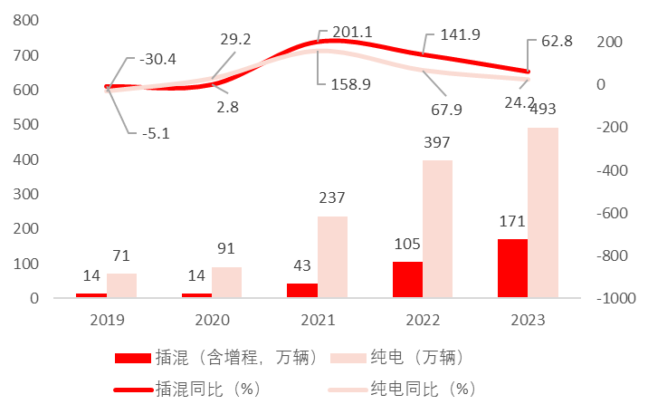
图1-1 纯电vs插混 新能源乘用车市场走势（万辆）
数据来源：汽车之家研究院
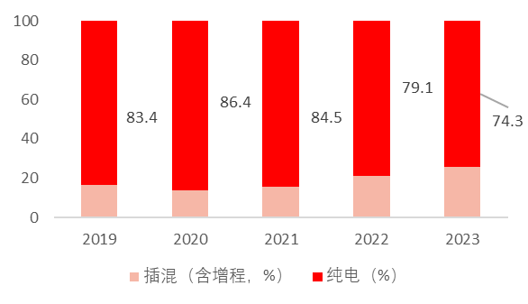
图1-2 纯电vs插混 新能源乘用车市场份额占比（万辆）
数据来源：汽车之家研究院
从新能源市场发展的趋势上看，随着插混及增程车型在技术上不断取得突破，提供了更长的续航里程和更灵活的驾驶体验，使得插混及增程车型成为消费者”跨入”新能源市场的首选，其销量增速长期领跑于纯电车型市场增速。
新能源市场的大部分份额仍有由纯电车型所占据，但插混及增程持续提升，24年预计占比提升至1/3。
插电式混合动力汽车（PHEV）和纯电动汽车（EV）在市场竞争中各有优势和劣势，它们之间的竞争地位取决于多种因素，包括技术成熟度、续航能力、成本、政策支持以及消费者需求。
从技术成熟度和可靠性来看，PHEV结合了传统燃油车和电动车的优点，技术相对成熟，性能和可靠性接近传统燃油车，更容易被消费者接受。相比之下，纯电动车虽然在环保和零排放方面具有显著优势，但其技术仍在不断进步中，且面临充电基础设施不足和续航焦虑等问题。
在续航里程方面，PHEV通常具有更长的续航里程，可以在电池耗尽后通过内燃机继续行驶，解决了纯电动车的续航焦虑问题。而纯电动车的续航里程虽然在提升，但在长途旅行时仍存在一定的局限性。
从成本角度来看，PHEV的购车成本通常低于纯电动车，因为其电池容量较小，生产成本较低。然而，纯电动车的运营成本较低，因为电力比汽油便宜，且维护需求也较低。此外，随着电池技术的进步和充电设施的完善，纯电动车的成本有望进一步降低。
政策支持方面，不同国家和地区对PHEV和EV的支持力度不同。在中国市场，PHEV由于其灵活性和过渡性特点，得到了较多政策优惠。然而，随着全球对低碳环保要求的提高，未来政策可能会更倾向于支持纯电动车的发展。
市场表现方面，PHEV近年来增速显著，特别是在中国市场上表现强劲。然而，纯电动车在高端市场和长期使用中更具吸引力，预计未来市场份额将逐渐增加。
总体而言，PHEV凭借其续航无忧、成本较低和技术成熟的优势，在短期内仍具有较强的市场竞争力。然而，随着充电基础设施的完善和电池技术的进步，纯电动车在未来有望成为市场的主流选择。因此，两者之间的竞争将更加激烈，并可能在未来形成互补共存的局面。
（2）纯电动汽车vs传统燃油车
从市场份额来看，传统燃油车在市场中仍占据主导地位。尽管新能源汽车的市场份额逐年上升，但燃油车在小城市和乡村地区依然占据重要位置，特别是在购买力较弱的地区，燃油车因其较低的价格和较高的残值率而更受欢迎。然而，随着电动车技术的进步和政策支持，电动车在城市市场中的渗透率正在迅速提升。例如，在入门级车型市场，纯电动车已经超越燃油车成为销量冠军。
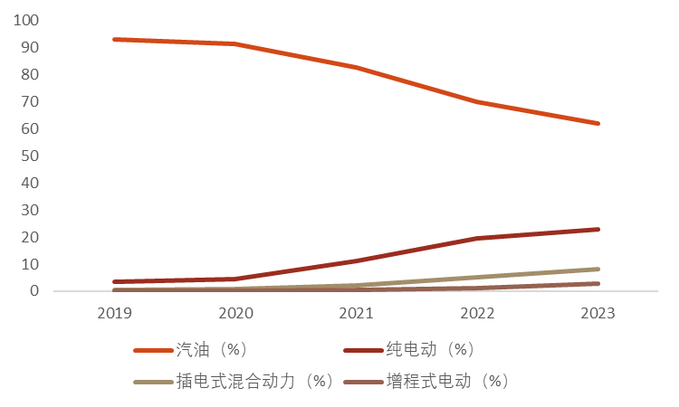
图1-3 2019年-2023年汽油、纯电、增程、插电混车型市场份额发展趋势对比
从经济性角度来看，电动车在使用成本上具有明显优势。电动车的能源成本显著低于燃油车，约为燃油车的33%。此外，电动车的保养成本也低于燃油车，约为燃油车的26%。然而，电动车的购置成本通常高于同级别的燃油车，尽管政府补贴政策有助于降低购车成本。随着电池技术的发展和充电基础设施的完善，电动车的经济性将进一步提高。下图以新能源汽车比亚迪宋plus为例：
表1-1 宋PLUS购车成本对比
在环保方面，电动车具有明显优势。电动车零排放，减少了尾气排放对环境的影响。虽然电动车使用的电力可能来源于火力发电，但总体上仍比燃油车更环保。此外，电动车在噪音控制和驾驶体验上也优于燃油车。
表1-2 汽油乘用车与纯电动乘用车各级典型车型的温室气体排放量
乘用车类型 车型级别 温室气体排放量 (gCO2e/km)
汽油 A级 231.5
汽油 B级 258.8
汽油 C级 273.4
纯电动 A00级 153.7
纯电动 C级 197.7
数据来源：中国汽车工程协会（2019）
总体而言，尽管传统燃油车在市场中仍占有一席之地，但电动车凭借其经济性、环保性和技术优势，正在逐步改变市场格局。未来，随着技术进步和政策支持的持续推动，电动车有望在更多市场中取代燃油车，成为主流选择。
1.4.纯电动车内部竞争
纯电10万以下轿车市场：以五菱宏光MINIEV为代表，形成独立细分市场，但发展到2023年，随着这个市场内玩家越来越多，以及车市需求逐渐高端化的趋势，该市场早已饱和甚至萎缩；
纯电10-20万市场：以比亚迪、埃安为主，是传统车市的最主销价格区间，也是新能源竞争最激烈的市场；
纯电20-40万市场：由于特斯拉的Model 3和Model Y热度高，且价格波动也大，最终引来下至20万、上至60万超大范围的综合竞争，包括蔚来、大众等品牌都属于特斯拉影响范围。
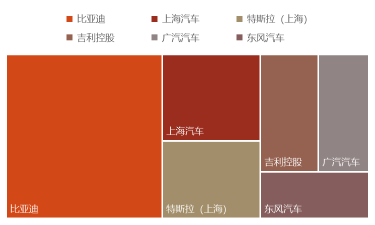
图1-4 2023年纯电动汽车产业重点企业新能源汽车销量分布
数据来源：华经产业研究院
从图中可以看出，比亚迪在新能源汽车销量方面具有明显的优势，遥遥领先于其他企业。上海汽车和特斯拉（上海）的销量也相对较高，但与比亚迪相比仍有较大差距。吉利控股、广州汽车和东风汽车的销量相对较低，但也在一定程度上反映了它们在新能源汽车市场中的地位。
总体来看，比亚迪在2023年的新能源汽车市场中占据了主导地位，而其他企业则在不同程度上参与了市场竞争。
新能源汽车顾客特征
2.1.新能源汽车用户画像构建
2.1.1年龄与性别分布
年轻化趋势：新能源汽车用户群体中，年轻人群（尤其是80后、90后）占比显著，他们更容易接受新事物，对环保理念有较高的认同感。
性别均衡化：随着市场成熟和车型多样化，新能源汽车的性别界限逐渐模糊，女性用户比例逐年上升，反映出性别平等的消费趋势。这一趋势与燃油时代女性车主占不到三成的状况明显不同。
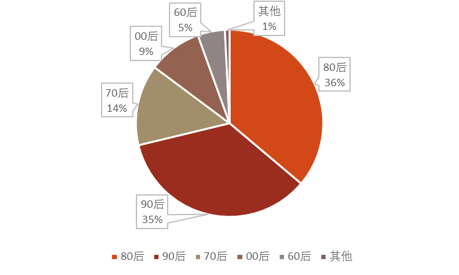
图2-1 新能源汽车消费者人口年龄属性
数据来源：懂车帝
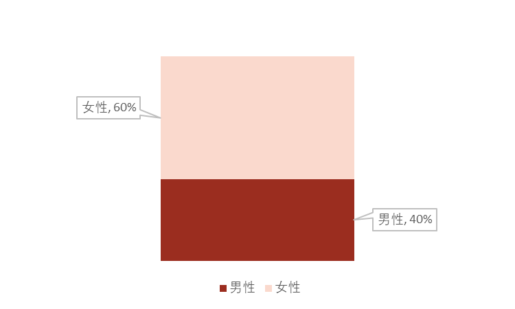
图2-2 新能源汽车消费者人口性别属性
数据来源：懂车帝
2.1.2教育与收入水平
高知高收入：新能源汽车用户普遍拥有较高的学历背景和收入水平，他们更加注重生活品质，愿意为环保、科技含量高的产品买单。
理性消费：尽管购买力较强，但新能源汽车用户在购车时仍表现出较强的理性态度，会综合考虑产品性能、价格、品牌等因素。
2.1.3地域特征
一线城市引领：新能源汽车在一线城市普及率较高，在深圳这类城市，新能源的普及率基本接近70%。这些地区政策支持力度大、充电基础设施完善，且消费者环保意识较强。
向二三线城市扩散：随着政策推动和充电设施的普及，新能源汽车正逐步向二三线城市乃至更广泛地区渗透。
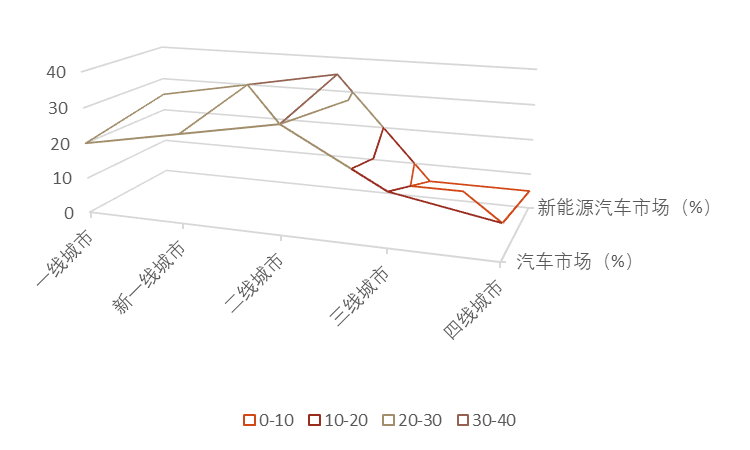
图2-3 新能源汽车消费者地理分布等高线图
数据来源：360智慧
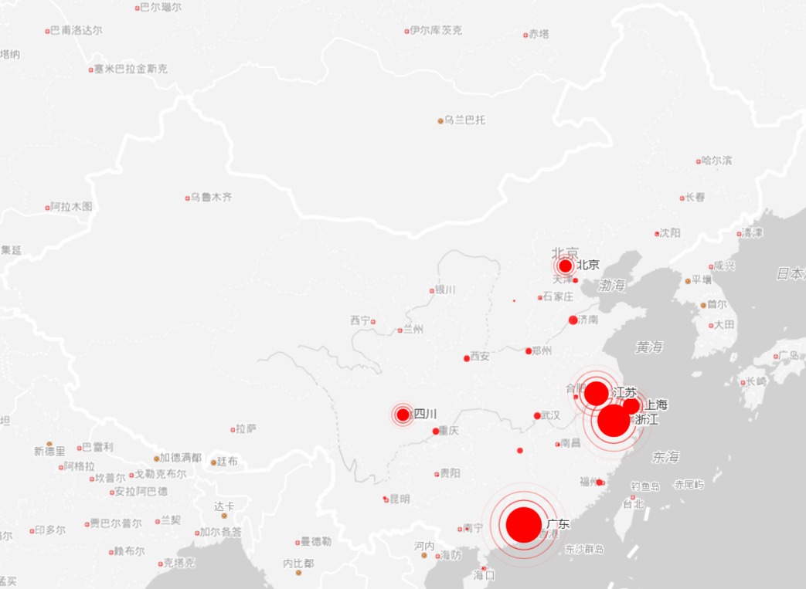
图2-4 特斯拉汽车消费者聚集城市
数据来源：车东西
2.2.消费动机与行为
2.2.1环保理念驱动
绿色出行：新能源汽车以其零排放或低排放的特性，成为践行绿色生活理念的重要载体。用户选择新能源汽车，往往出于对环境保护的责任感。
社会认同：使用新能源汽车还能在一定程度上体现个人的社会责任感和环保意识，获得社会的正面评价。
2.2.2技术与性能的吸引
技术创新：新能源汽车领域的技术创新层出不穷，如智能驾驶、车联网等技术的应用，为用户带来全新的驾驶体验。
性能优越：随着电池技术的进步和整车设计的优化，新能源汽车在续航里程、加速性能等方面已不输甚至超越传统燃油车。
体验极致：新能源汽车的驾驶过程更简单，对用户的技能要求更低；使用过程更加智能，简洁，趣味性娱乐性。
值得一提的是，这样的吸引力让用户一旦有过新能源车的使用体验，在二次置换或者增购的时候很难再选回燃油车[1]。
2.2.3购车补贴和优惠
政府出台的新能源汽车补贴政策月底消费者的购车偏好产生了影响。一些地区的消费者可能更加倾向于购买新能源汽车，因为能够享受到相关的补贴政策，降低购车成本[2]。
2.3.特征人群特点
城市通勤族：对于日常活动范围较小，主要在城市周边的人来说，拥有产权车位的纯电动汽车是理想选择。它们不仅方便安装充电桩，而且充电便捷，为这类车友提供了经济且环保的出行方式。
追求性能和科技感的发烧友：对于汽车爱好者而言，纯电动汽车的优势在于卓越的动力性能、舒适的驾驶体验以及前沿的科技配置。这些特性无疑能满足他们对驾驶乐趣的追求。
新手司机或技术不佳者：对于新手，纯电动汽车的高级辅助驾驶功能是个福音。例如，自动泊车入位功能特别适用于侧方位停车，这大大降低了驾驶难度。选择价位稍高一些的车辆，可以享受到更多的智能化便利。
运营车辆者：专为滴滴、专车司机和货拉拉这类频繁短途行驶的人员设计，纯电动汽车的经济性是关键。由于电费远低于燃油费，成本优势明显，尤其是对于预算有限的用户来说，性价比更高[3]。
3.特斯拉汽车市场分析
特斯拉作为新能源模式变革的领导者，在新能源产业链的多个环节进行了布局，涉及光伏、储能、新能源汽车等领域。公司掌握多项关键技术，例如自动驾驶技术FSD、集中式电子电气架构、一体化压铸技术等，并率先采用直营模式销售，实现了OTA技术升级付费服务，并构建了Robotaxi出行平台生态等商业模式创新。在新能源汽车市场，特斯拉的Model 3和Model Y在中国20万元以上的纯电动汽车市场中占据领先地位，成为大单品策略的成功典范。有用户表示，他们选择特斯拉并非仅仅因为电动汽车，而是因为特斯拉品牌本身。
一直以来，特斯拉的销量受制于产能，在中国市场每季度交一批车，直到2023年初，特斯拉率先打响了”价格战”，这也标志着产能受限已经不再是影响其销量的最主要因素。今年我们注意到特斯拉工厂停工、本应搅动15万市场的Model Q迟迟未推出，“星舰”发射失败、财报表现不佳、股价下跌等信息，它们预示特斯拉可能正在遭遇滑铁卢。当然特斯拉仍然在做引领行业的事情，如向多品牌开放超级充电站等。因此我们相信，一旦成功度过阵痛期，那么随着新车上市、产能提升，特斯拉的销量将大幅增长。
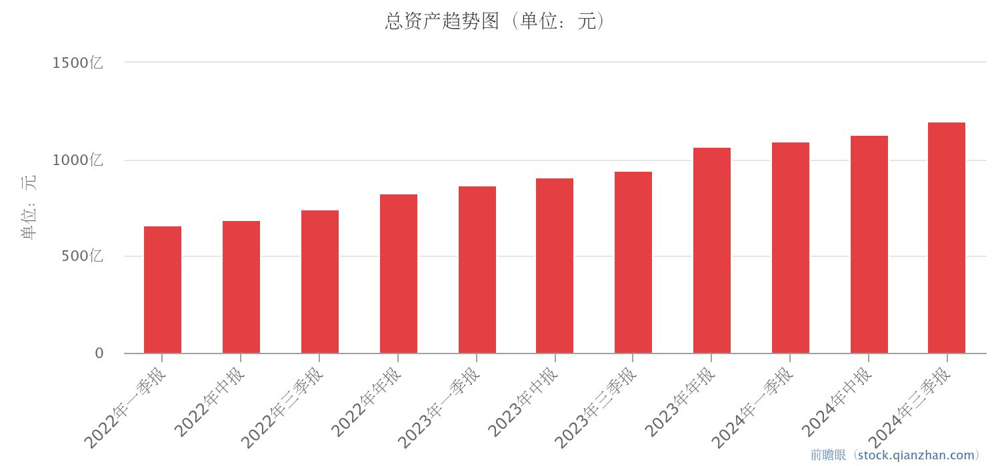
图3-1 特斯拉总资产趋势（人民币计价）
数据来源：前瞻眼
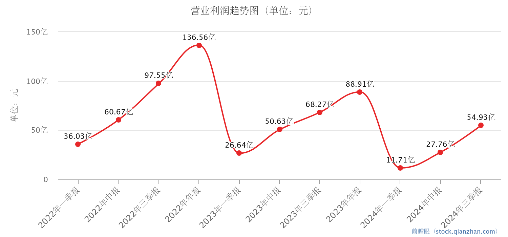
图3-2 特斯拉每股营业利润趋势（人民币计价）
数据来源：前瞻眼
在美国，特斯拉被视为创新、豪华和独特性的象征。特斯拉的目标受众不限于特定地理区域，特别是在科技发达的州如加利福尼亚州，特斯拉因其超级充电网络的广泛覆盖而广受欢迎。特斯拉吸引了早期采用者，他们欣赏前瞻性技术，并愿意接受独特和颠覆性的产品。特斯拉在美国的定位是高端电动汽车品牌，其产品以尖端技术和卓越性能为特征。特斯拉在美国的市场份额在1.3%到2.6%之间波动，平均约占2%的市场份额[4]。
中国是特斯拉全球扩张战略中的关键市场。特斯拉在中国的销量在2020年至2021年迅速发展，花费一年时间翻了一番，占全球销量的五分之一[5]。特斯拉在中国的市场份额在2024年8个月的时间内平均为6.6%。特斯拉在上海建立了超级工厂，提高了生产能力，满足了当地需求，同时受益于中国对电动汽车的支持政策。本地生产还使特斯拉免受进口关税的影响，增强了竞争力。
对特斯拉进行中国市场上的SWOT分析，我们发现：特斯拉在中国市场的优势体现在其品牌影响力、创新技术和市场先发地位。特斯拉拥有强大的品牌认知，被视为电动汽车行业的领导者，其在中国市场的先发优势为其积累了忠实的客户群和市场经验。技术方面，特斯拉在智能驾驶、电机电控和OTA升级等领域具备领先优势。此外，特斯拉上海超级工厂的建立，不仅提升了产能，也使其成为中国重要的出口中心，增强了其全球供应链的灵活性。劣势方面，特斯拉在中国面临激烈的本土竞争，包括比亚迪、蔚来、小鹏和理想等品牌的挑战，这些品牌凭借全栈自研和创新智能化技术等卖点，与特斯拉展开竞争。此外，特斯拉在中国市场的增长还受到宏观经济和政策变化的影响，例如补贴政策的调整就可能对其市场表现产生影响。机会方面，特斯拉可以利用中国新能源汽车市场的快速增长，以及政府对新能源汽车消费的支持，进一步扩大市场份额。中国市场的规模和增长速度为特斯拉提供了巨大的增长潜力，尤其是在特斯拉零部件本土化率超过95%的情况下，这有助于降低成本并提高市场竞争力。威胁包括中国市场竞争的加剧，以及全球经济和需求恢复的不确定性。特斯拉需要应对的不仅是本土品牌的竞争，还有可能的经济波动和供应链问题，这些都可能影响其在中国的业务表现。此外，随着其他国际品牌（如开始试水新能源汽车的奥迪、丰田）加大在中国市场的投入，特斯拉面临的竞争压力可能会进一步增加[6]。
表3-1：特斯拉新能源汽车中国市场SWOT分析
特斯拉汽车顾客特征
4.1.特斯拉用户画像构建
4.1.1.基本特征
从性别比例来看，中国市场特斯拉用户以男性为主，男女比例约为3：2，其中女性占比38.2%，较传统燃油车女性用户比例明显提高。这一点与电动车使用者整体的性别比例恰好相反，体现了特斯拉对于男性用户有着特别的吸引力。从婚烟情况来看，用户普遍已婚有小孩，已婚用户占79.3%，且其中48.4%的用户已经有一个小孩。从年龄情况来看，用户以85后为主，90后、95后占比达到30.4%。从学历状况来看，用户受教育程度较高，以本科为主，占比达到59.9%，其次是大专和硕士以及以上学历的占比分别为16.0%和16.5%。
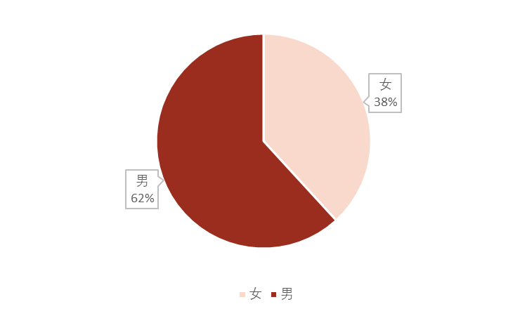
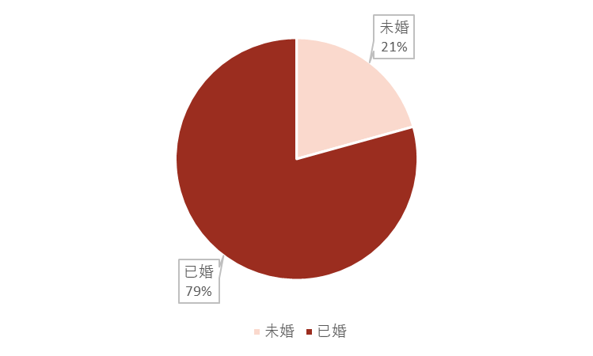
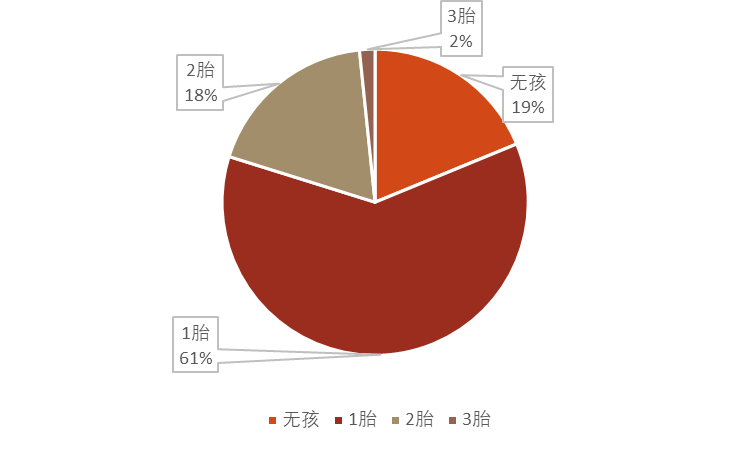
图4-1 特斯拉用户基本特征画像（性别、婚姻状况）
数据来源：中汽数据
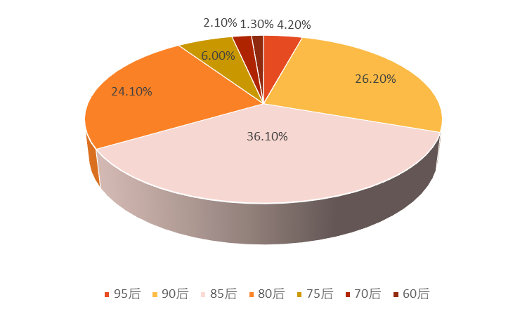
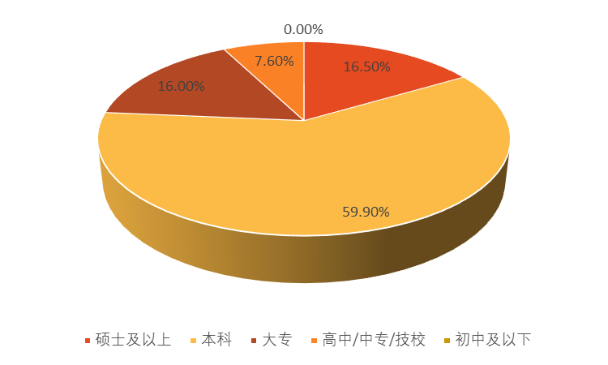
图4-2 特斯拉用户基本特征画像（年龄与学历）
数据来源：中汽数据
4.1.2.职业特征及其收入水平
中国市场特斯拉的用户所从事的职业以互联网、金融、贸易等新兴行业为主，占比57.9%，其中计算机/互联网行业占比高达24.6%。在职务方面，以中级管理人员，企业主/老板为主，占比50.3%，其中中级管理人员占比29.6%。而用户所在单位普遍是民营/私营企业，比例高达52.6%。因此，特斯拉用户主要是民营、私营企业中级管理人员，一般从事互联网等新兴行业。
中国市场特斯拉的用户家庭年收入集中在40-90万，家庭可支配收入较充裕，家中常有多辆车，有比较丰富的购车用车经验[7]。
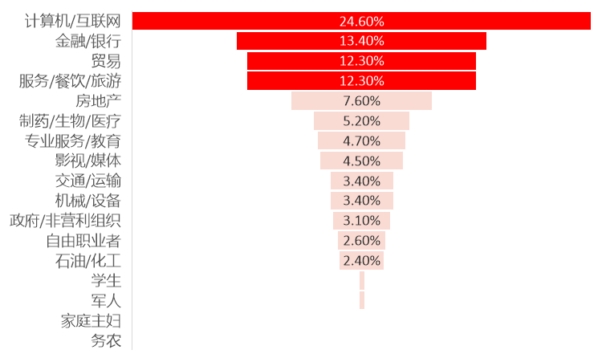
图4-3 特斯拉用户行业分布特征
数据来源：中汽数据
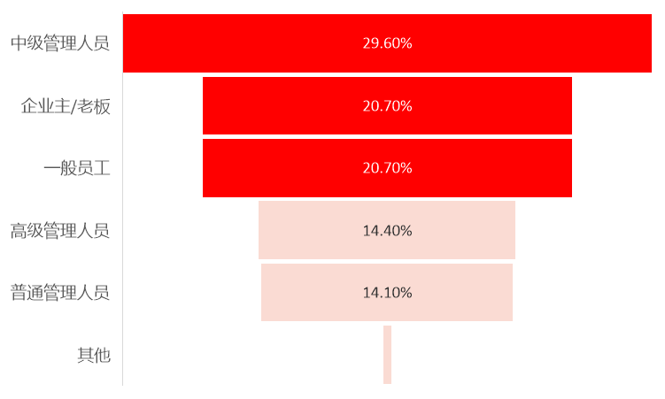
图4-4 特斯拉用户职位分布特征
数据来源：中汽数据
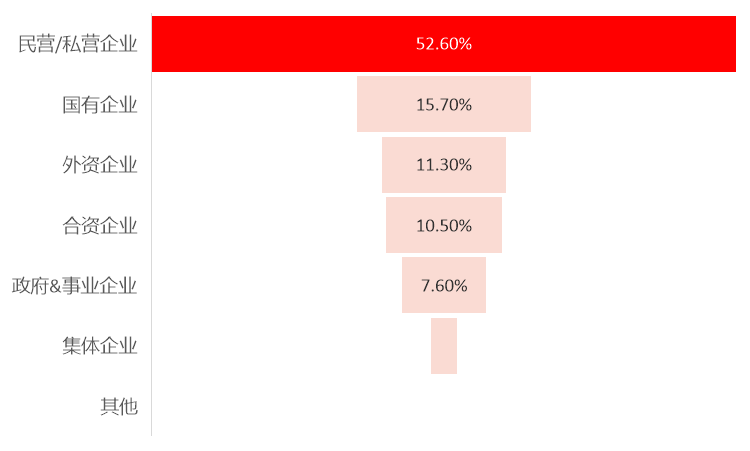
图4-5 特斯拉用户单位分布特征
数据来源：中汽数据
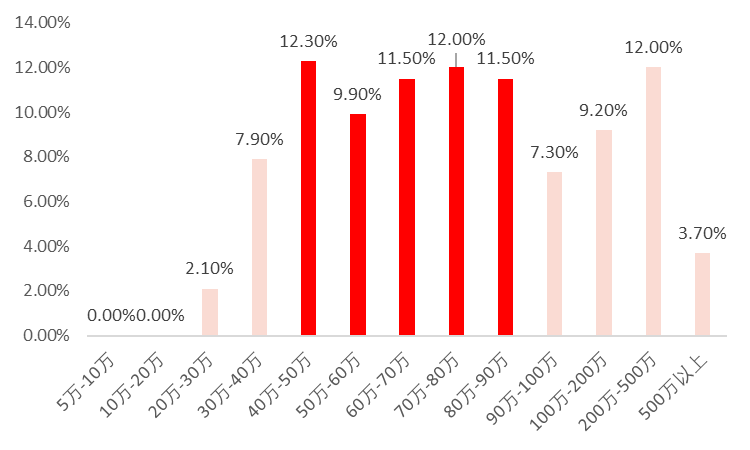
图4-6 特斯拉用户年收入分布特征（人民币计价）
数据来源：中汽数据
4.1.3性格及其兴趣爱好
中国市场的特斯拉用户较为外向开朗、热情豁达、懂得享受生活，喜欢追求个性的表达和圈层文化，热衷于表达自身观点与尝试新鲜事物，有特定的交友圈，并且对生活有更高的期望和追求，渴望通过自身努力换取更好的生活质量，性格外向热情的用户占比例高达59.9%。兴趣爱好方面，对旅游、户外运动、摄影、音乐、读书这些享受型及比较能够提升自我修养的活动更感兴趣，像喜欢旅游、电影、音乐和户外活动的用户所占比例都超过30%[8]。
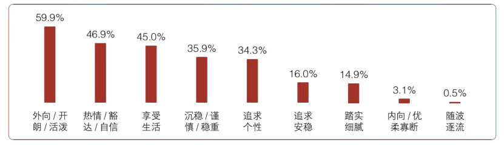
图4-7 特斯拉用户性格特征分布
图片来源：中汽数据
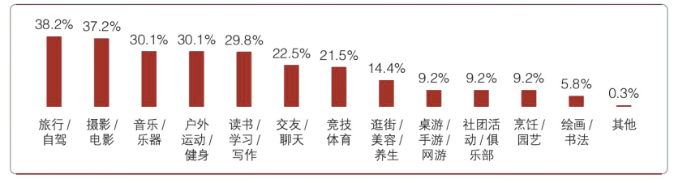
图4-8 特斯拉用户爱好特征分布
图片来源：中汽数据
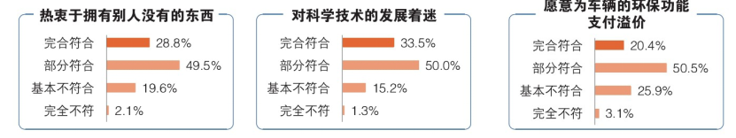
图4-9 特斯拉用户行为与认知特征分布
图片来源：中汽数据
4.2.消费动机与行为
使用5W1H分析法方法，我们可以分析购买特斯拉新能源汽车的消费者行为[9]。
消费者购买对象（What）：特斯拉新能源汽车以其卓越的电池技术、自动驾驶功能和环保理念而闻名。消费者选择特斯拉，很大程度上是在为其产品在最大续航里程、安全性和价格方面的优势买单。
消费者购买动机（Why）：购买特斯拉的消费者通常追求的是高科技体验、环保出行以及品牌带来的社会地位。他们可能对电动汽车的可持续发展和清洁能源有着较高的认同感，同时也可能受到特斯拉创新技术和品牌形象的吸引。
消费者购买活动参与者（Who）：购买特斯拉的消费者群体包括环保意识强的个人、追求高科技体验的年轻消费者以及有一定经济实力的社会精英。这些消费者可能在家庭或朋友圈中起到意见领袖的作用，影响周围人的购买决策。
消费者购买时机（When）：消费者购买特斯拉的时间通常与多种因素相关。例如，新车型发布往往会激发消费者的购买欲望，因其可能带来更先进的技术和功能；政策补贴的调整也会影响购买时机，补贴增加时消费者可能更倾向于购买；个人财务状况改善，如收入增加、资金充裕时，也会促使消费者考虑入手特斯拉产品。
消费者购买地点（Where）：特斯拉主要通过直营店和官方网站销售，消费者可以直接在特斯拉的体验中心或在线平台上进行购买。这种直销模式省去了传统经销商环节，使得消费者能够直接与品牌互动。
消费者购买方式（How）：特斯拉的购买过程高度数字化，消费者能够通过官方网站进行配置选择、下单支付，并享受后续的交付服务。在交付环节，特斯拉提供详细的车辆使用培训和指导。此外，特斯拉还提供试驾服务，让消费者在购买前充分体验产品性能。其售后服务也较为完善，包括定期的软件更新推送、远程诊断与维修支持等，为消费者提供全方位的购车与用车体验。
4.3.特征人群特点
根据收集到的资料，我们将特斯拉中国市场顾客总结为三类典型群体：
第一类是潮流技术控，Model 3的主力消费群体。以男性为主，90后为主，较为年轻，中高收入，家庭压力较小，有经济实力支撑各类科技产品的购买；他们多就职于计算机/互联网等新兴行业，追求新兴科技，渴望体验新鲜刺激的产品，对高科技品牌有天然的好感；主要看重车辆的技术水平、智能化和独特的技术卖点，对车内信息娱乐系统有较高的需求，对OTA、自动驾驶等前沿技术关注度较高。
第二类是时尚达人，Model 3的第二大消费群体。以女性为主，85后为主，消费偏感性，中高收入家庭，有经济实力支撑其追求更奢侈个性化的消费；他们接触潮流和时尚较多，看重产品的颜值、品牌、个性化等外在因素；对技术不敏感，但认可新技术带来的个性化和品牌价值，看重车辆的颜值，希望车辆能引人注目，并且能展示车主的特点，对自动驾驶等机械化技术不敏感，但对信息娱乐系统有一定的需求，并希望能增加更多娱乐功能。
第三类是务实中产，Model 3的第三大消费群体。男性为主，80后占比相对较高，中等收入为主，这类人家庭责任感较强，相对务实，消费相对理性；工作以房地产、服务等传统行业为主，工作社交较多，对产品品牌调性有一定需求；对车辆的技术和创新有好感，但相对理性，更看重可靠性和实用性，对车辆的品牌有一定的要求，希望车辆能够匹配自己的社会地位[10]。
5.特斯拉汽车营销现状分析
5.1.顾客价值与顾客满意度
特斯拉的顾客价值主要体现在其电动汽车的高性能、创新技术、长续航能力和充电基础设施上。特斯拉的车辆以其加速性能、操控性和驾驶体验著称，常常超越高性能的汽油动力汽车。此外，特斯拉不断将新技术融入其车辆中，如自动驾驶功能Autopilot、空中软件更新和先进的安全系统，这些都使特斯拉在汽车技术领域保持领先地位[11]。同时，特斯拉采用直营模式，价格透明，所有维修项目和配件价格统一，这降低了购车成本、使用成本和时间成本。特斯拉的车辆保养周期长，保养内容不固定、不强制，这为车主节省了大量时间和物质成本。此外，特斯拉还提供线上服务的优势，工作人员在车主到店前已完全掌握车辆问题，避免了车主的奔波。
特斯拉在顾客满意度方面表现突出。根据消费者报告（Consumer Reports）的数据，特斯拉从2016至2020年，连续四年在车主满意度调查中领先，尽管在可靠性评级方面排名靠后，但在驾驶体验、舒适性和车内电子设备等方面得分较高[12]。
高顾客价值以及高顾客满意度使得特斯拉的品牌忠诚度非常高，2022年5月的品牌忠诚度达到了63%，是所有品牌中最高的，这表明特斯拉的顾客不仅购买了车辆，而且对他们的车辆非常满意，并计划再次购买[13]。
5.2.营销战略分析
从营销战略以及营销目标设计上来看，特斯拉的营销战略核心在于推动全球向可持续能源的转变，其愿景是通过提供消费能力范围内的纯电动车辆来实现这一目标。特斯拉的”三步走”战略包括：首先打造高端跑车立足市场，其次推出中等价位车型扩大销量，最后推出经济型畅销车型以实现大规模普及。这一战略体现了特斯拉从高端市场向大众市场逐步渗透的营销目标。
从实现目标上的途径上来看，特斯拉通过创新技术和产品，如Model S、Model 3、Model X和Model Y等车型，覆盖了从高端到中端市场，成功吸引了不同消费层次的客户。特斯拉的营销表现还体现在其对社交媒体和数字广告的运用上，尽管最初坚持零广告政策，但随着市场竞争的加剧，特斯拉开始在数字广告上投入，以寻求销售增长。
从规划经营战略上来看，特斯拉的经营战略包括内部化设计和开发、自有制造和直接分销三大支柱，这使得特斯拉能够实现垂直整合，达到规模经济。特斯拉还注重储能和发电，创建充电站和能源存储解决方案的基础设施，以支持其电动汽车业务。此外，特斯拉的实时保险模型利用车辆的驾驶数据提供动态保险费，降低保险成本，推动对特斯拉汽车的需求[14]。
从营销计划上来看，特斯拉的营销计划中，一个关键的方面是其直销模式，通过网上和实体商店直接向客户销售车辆，绕过传统经销商。特斯拉还建立了强大的在线社区，通过社交媒体与潜在消费者进行信息发布和交流互动，如在Twitter、Facebook等平台上与用户互动。此外，特斯拉通过影视内容免费植入营销，以及深耕本土化新媒体营销，如在中国的社交媒体平台开通官方账号，参与电商平台活动，以扩大品牌影响力。特斯拉的营销计划还包括了对创新功能的强调，如自动驾驶技术，以及使用市场细分来接触目标受众，如最初针对豪华跑车爱好者市场，然后逐步扩展到更广泛的环保受众[15]。
5.3.市场竞争战略分析
从竞争者角度分析（使用波特五力模型），特斯拉在中国市场的竞争力可以通过波特五力模型进行分析。首先，供应商议价能力方面，特斯拉通过垂直整合和长期合同来降低供应商议价能力的影响。其次，新进入者的威胁相对较低，因为特斯拉已经建立了强大的品牌和技术创新壁垒。第三，替代品的威胁正在增加，随着传统汽车制造商和其他新兴电动汽车品牌的加入，市场竞争日益激烈。第四，买方议价能力较强，因为消费者对价格敏感，且市场上有多种选择。最后，行业内竞争者的竞争能力非常激烈，特斯拉需要不断创新以保持其市场领导地位。
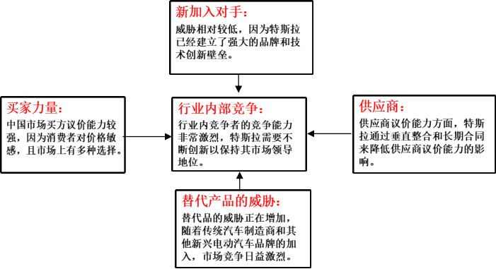
图5-1：特斯拉新能源汽车中国市场波力五力模型分析
从战略原则来看，特斯拉的战略原则是专注于技术创新、品牌建设和用户体验，以维持其市场领先地位。特斯拉通过提供高性能、高科技的电动汽车，以及完善的充电网络和售后服务，来吸引和保留客户。
根据迈克·波特的竞争理论，特斯拉在中国市场的定位可以被视为市场领先者。特斯拉以其创新的技术和产品在市场上占据领先地位，并通过不断的技术创新和品牌建设来维持这一地位。特斯拉不仅在电动汽车领域领先，还通过太阳能产品和储能解决方案扩展其业务范围，进一步巩固其市场领导者的地位。特斯拉的战略是通过持续的技术创新和全球扩张来保持其市场领先者的地位，并应对来自市场挑战者、市场追随者和市场利基者的竞争。
5.4.特斯拉新能源汽车在中国市场创新营销策略分析
从产品和品牌定位来看，特斯拉在中国市场的产品定位倾向于高端和创新，这一策略使其能够吸引对新技术和高品质汽车有兴趣的消费群体。特斯拉通过创新的产品设计和独特的品牌形象，成功吸引了中国消费者的关注。特斯拉的产品线覆盖了从高端跑车到大众消费车型，贯彻了从奢华到大众消费的三步走战略。
从营销和销售模式来看，特斯拉放弃了传统的广告模式，没有广告预算，而是通过”人货场”营销玩法，极致地运用创始人影响力、员工营销、种子用户与名人效应等方式进行品牌推广。特斯拉的门店不仅是零售场所，也是教育场地，通过直营店直接向消费者卖车，把控产品带给市场的方式。特斯拉的员工在门店中扮演的是”售前顾问”的角色，而不是传统的销售员，他们的目标是教育消费者，而不是直接推销产品。
从社交媒体和数字化营销来看，特斯拉在中国市场上深耕本土化新媒体营销，在微博、微信、抖音、快手等社交媒体平台开通官方账号，并积极参与第三方电商平台的活动，如在天猫开店、拼多多等平台入驻。特斯拉还通过社交媒体与潜在消费者进行信息发布和交流互动，把官网作为营销主阵地，提供会员注册功能，进行数据库营销。此外，特斯拉也善于运用新兴营销方式和传播渠道，如直播带货，以”1元试驾”和1元的马斯克同款T恤吸引粉丝观看。
5.5.营销效果评析
10年间，特斯拉在海内外不断刷新生产销售纪录。
特斯拉2014年进入中国市场当年，只有15位车主。2014-2016年，特斯拉累计在华交付了2.12万辆车，到了2017年，特斯拉在中国销售超过2万辆，相当于前三年总和，进入高速发展阶段。2019年，特斯拉在华销量约5万辆；2020年特斯拉在华销量翻近3倍达14.8万辆，成为中国市场电动车销冠；2021年翻倍增长至32.07万辆。2022-2023年，特斯拉中国市场销量分别为43.98万辆以及60.37万辆，同比增长37.1%以及37.3%。
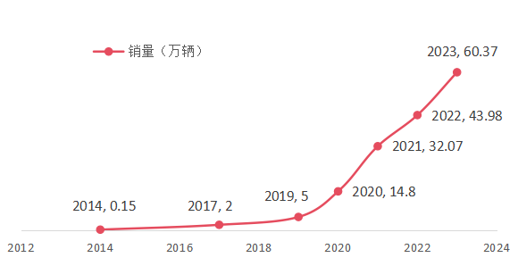
图5-2 特斯拉入华10年销量
数据来源：雪球
特斯拉在中国市场的营销效果显著，销量增长迅猛，品牌影响力不断扩大，技术创新和本土化战略是其成功的关键。随着环保意识的提升和政策的支持，特斯拉成功抓住了中国市场的机遇，实现了从小众到主流的跨越，成为中国电动车市场的领军品牌。
6.对特斯拉在中国市场的营销建议
综合特斯拉新能源汽车在中国市场的营销现状和创新点，我们向特斯拉提出以下几点建议：
加强本土化营销策略。特斯拉在中国市场的营销策略应进一步深化本土化，考虑到中国消费者的独特需求和偏好。例如，可以通过与本地文化和节日结合的营销活动来增加品牌的亲和力和吸引力。
利用数字化和社交媒体平台。特斯拉应继续强化其数字化营销策略，特别是在社交媒体平台上。通过与消费者实时互动，发布产品更新信息，以及利用用户生成内容（UGC）来扩大品牌影响力。目前特斯拉在美国市场已经利用美国社交媒体收获大量粉丝，它在中国也可以利用哔哩哔哩等平台提高影响力。
优化客户体验和售后服务。鉴于特斯拉采用直销模式，建议进一步优化客户体验和售后服务，以提高用户满意度和忠诚度。可以通过提供更加个性化的服务和快速响应客户需求来实现这一点。
持续创新和技术研发。特斯拉应持续投入研发，保持技术领先优势。通过不断的技术创新，如自动驾驶技术的进步和电池性能的提升，来吸引和保持消费者的兴趣。
扩大产品线和市场细分：特斯拉可以考虑进一步扩大其产品线，覆盖更广泛的市场细分。通过推出更多型号和价格区间的车型，可以吸引不同消费层次的客户，从而增加市场份额。同时，特斯拉可以探索新的市场细分，如电动皮卡Cybertruck和电动卡车Semi，以创造新的增长点。
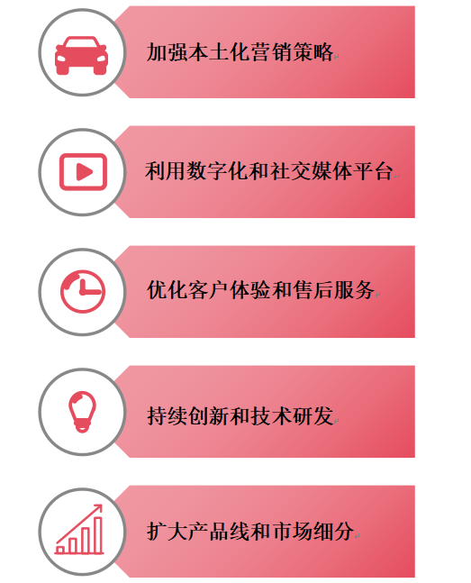
图6-1：给特斯拉的营销建议
7.总结与展望
7.1.总结
在本文中，我们着重分析了新能源纯电动汽车的市场环境，包括政策环境、经济环境、技术环境等等，同时我们也将新能源汽车与其竞争对手（插电混合汽车以及传统燃油车）进行了相应的比较。经过市场环境的分析以及竞争对手比较，可以看到，电动车凭借其经济性、环保性和技术优势，正在逐步改变市场格局。未来，随着技术进步和政策支持的持续推动，电动车有望在更多市场中取代燃油车，成为主流选择。此外，我们还分析了新能源汽车的顾客特征：新能源纯电动汽车的消费人群主要包括城市通勤族、追求性能和科技感的汽车爱好者以及一些新手司机等等。
为了更实例化地分析纯电动汽车，我们还以新能源纯电动汽车的先行者 - 特斯拉为例子，对它的市场环境、顾客特征以及市场营销现状进行了详细的分析。市场环境和顾客特征方面，特斯拉与主流的纯电动汽车大同小异，它受到政策的支持，同时伴随着科技技术的不断进步，它具有很大的发展潜力和市场空间。而它的消费人群，也是以追求高科技感和时尚达人为主。至于市场营销现状方面，特斯拉在中国市场的推广活动成效斐然，销量急剧上升，其品牌的影响力持续增强，成功地从非主流地位跃进至市场主流，成为中国电动汽车市场的领导者。
7.2.展望
目前，中国纯电动汽车市场上有一些领军企业，如比亚迪、特斯拉、蔚来、小鹏等，它们凭借强大的品牌影响力和技术实力，占据了市场的主导地位。随着纯电动汽车市场的不断扩大和竞争的加剧，企业之间的竞争也越来越激烈。在价格、品质、服务等方面，企业都需要不断提高自己的竞争力，才能在市场中立足。中国新能源汽车行业在过去几年中经历了迅猛发展，未来前景同样充满机遇和挑战。展望未来，中国新能源汽车行业将继续在政策支持、技术创新、市场需求和国际竞争等多个方面推动其发展。
首先，政策支持仍将是中国新能源汽车行业发展的重要驱动力。国家政策的持续鼓励，包括购车补贴、税收减免和充电基础设施建设等，将继续促进新能源汽车的普及。特别是”双碳”目标的提出，为新能源汽车行业带来了前所未有的发展机遇。政府在减少碳排放和推动绿色发展的战略下，新能源汽车作为减少碳排放的重要工具，将受到更大力度的支持。
其次，技术创新将是推动行业持续发展的核心要素。随着电池技术的不断进步，新能源汽车的续航里程、充电速度和安全性能将不断提升。例如，固态电池和氢燃料电池技术的突破有望显著提升新能源汽车的性能和市场竞争力。此外，智能驾驶和车联网技术的发展也将为新能源汽车带来新的增长点，提升用户体验和市场接受度。
市场需求方面，随着消费者环保意识的提升和对节能减排的需求增加，新能源汽车的市场需求将继续扩大。尤其是在一线城市和特大城市，新能源汽车凭借其环保、节能和限行优势，将吸引更多消费者选择。同时，二手新能源汽车市场的发展也将为新车市场提供支持，形成良性循环。
国际竞争亦将对中国新能源汽车行业产生重要影响。中国新能源汽车企业在全球市场上的地位日益提升，出口量逐年增加。未来，中国企业将在国际市场上面临更多挑战，但也将迎来更多机遇。通过技术创新和品牌建设，中国新能源汽车有望在国际市场上取得更大突破，提升全球竞争力。
尽管前景光明，但中国新能源汽车行业也面临一些挑战。电池回收和再利用问题、以及市场竞争加剧等，都是需要克服的障碍。未来，行业内企业需要加强合作，共同推进技术进步和基础设施建设，以应对这些挑战。
总而言之，随着各项利好因素的不断积累，中国新能源汽车行业将在全球绿色能源革命中扮演重要角色，成为推动未来交通变革的重要力量。
参考文献
SEE.DO审度用户策略咨询.2024新能源汽车消费者洞察[EB/OL].(2024-08-05).https://cxhub.cn/post/4Tgd10SR397eJ446?t=2024%E6%96%B0%E8%83%BD%E6%BA%90%E6%B1%BD%E8%BD%A6%E6%B6%88%E8%B4%B9%E8%80%85%E6%B4%9E%E5%AF%9F
新能源汽车市场的消费者特征与偏好分析[EB/OL].(2023-11-26).https://wenku.baidu.com/view/d2562fb1edfdc8d376eeaeaad1f34693daef10a6.html?_wkts_=1732106069263&bdQuery=%E7%BA%AF%E7%94%B5%E5%8A%A8%E8%BD%A6%E5%AE%A2%E6%88%B7%E7%89%B9%E5%BE%81&needWelcomeRecommand=1
哪些人群适合买纯电动车[EB/OL].(2024-07-26).https://www.autohome.com.cn/ask/9435601.html
Zachary Shahan.Tesla Sales & Market Share Trends in China[EB/OL].(2024-9).https://cleantechnica.com/2024/09/13/tesla-sales-market-share-trends-in-china/
CleanTechnica.Tesla Target Market Analysis and Segmentation - Brand OverviewChina[EB/OL].(2022-4-11).https://www.start.io/blog/tesla-target-market-analysis-and-segmentation/
Matthew Ramirez.Tesla, Inc.: Business Model, SWOT Analysis, and Competitors 2024[EB/OL].(2024-6-4).https://pitchgrade.com/companies/tesla-inc
蒋保信.特斯拉Model Y用户满意度调研报告[EB/OL].(2023-06-13).https://zhuanlan.zhihu.com/p/636838126
王景景,孟健,常凯迪.特斯拉Model 3用户画像浅析[J].时代汽车,2022,(13):160-162.
艾媒生活与出行产业研究院.艾媒咨询 | 2024-2025年全球及中国新能源汽车行业消费趋势监测与案例研究报告[EB/OL].(2024-11-09).https://www.iimedia.cn/c400/103141.html
特斯拉中国市场消费者心理动机研究[EB/OL].(2015-11-04).https://www.docin.com/p-1942743739.html
Daniel Pereira.Tesla Marketing Strategy[EB/OL].(2024-7-10).https://businessmodelanalyst.com/tesla-marketing-strategy/
Andrei Nedelea.Tesla Is Number One In Consumer Reports' 2020 Owner Satisfaction Survey[EB/OL].(2021-2-5).https://insideevs.com/news/486130/tesla-consumer-reports-owner-satisfaction-win-2020/
Tom Libby.May 2022 Tesla brand loyalty more than doubles year-over-year and leads all brands industry-wide[EB/OL].(2022-8-1).https://www.spglobal.com/mobility/en/research-analysis/may-2022-tesla-brand-loyalty-more-than-doubles-yearoveryear.html
热纳罗·库法诺.特斯拉商业战略分析[EB/OL].(2024-2-7).https://fourweekmba.com/zh-CN/%E7%89%B9%E6%96%AF%E6%8B%89%E5%95%86%E4%B8%9A%E6%88%98%E7%95%A5/
扎库恩·阿明.特斯拉的营销策略：12 个重要经验教训[EB/OL].(2024-1-25).https://squeezegrowth.com/zh-CN/key-lessons-from-tesla-marketing-strategy/
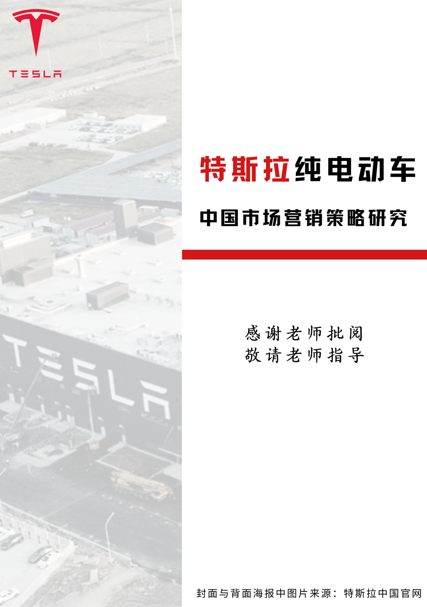